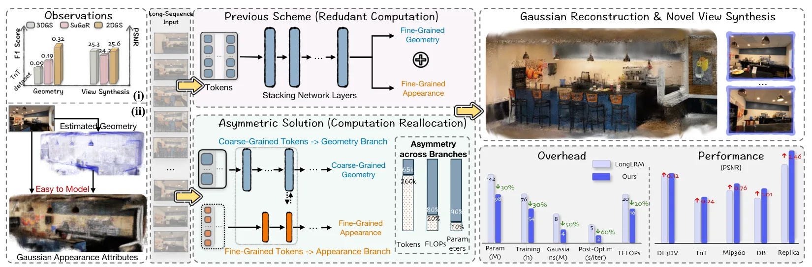
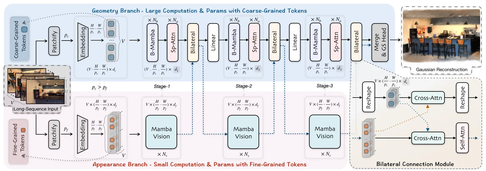
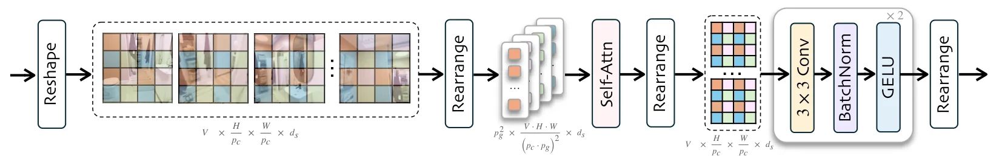
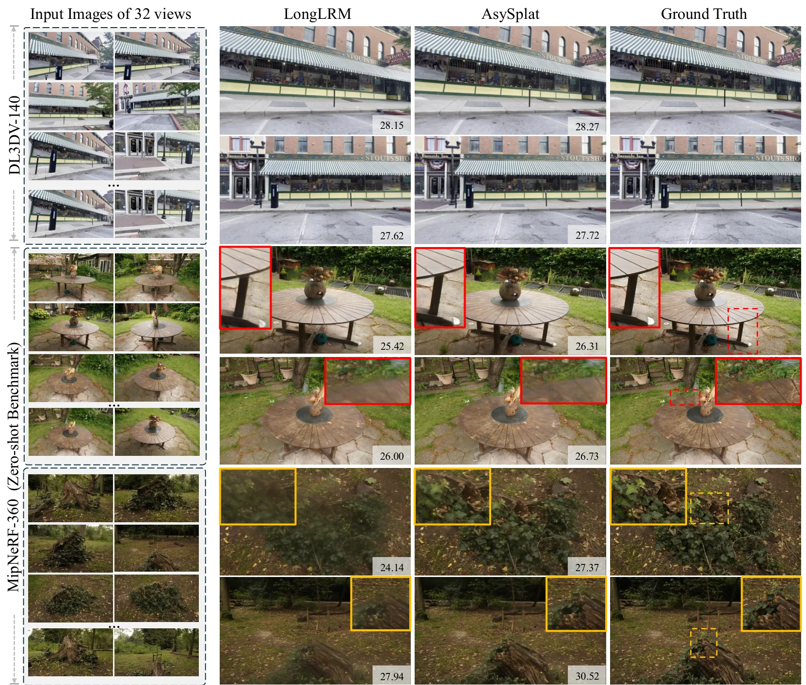
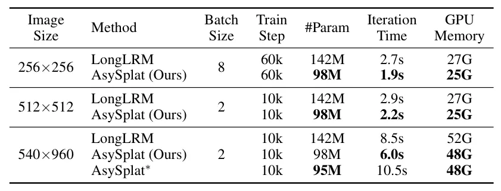
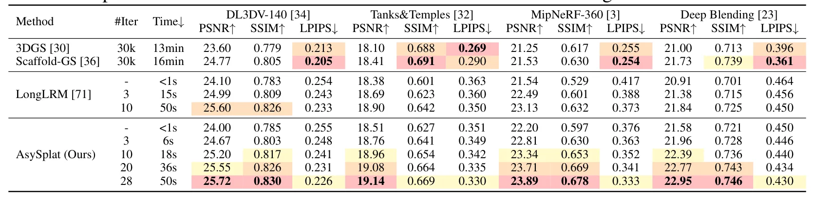
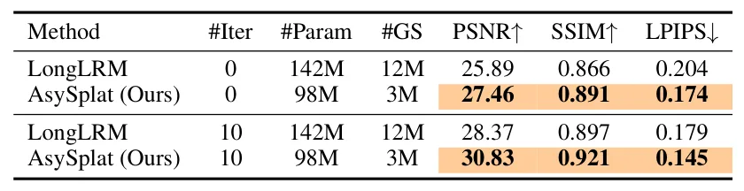
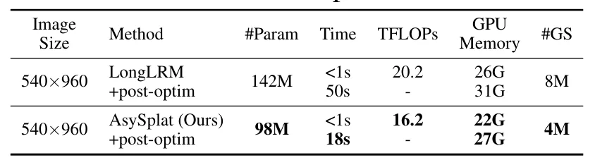
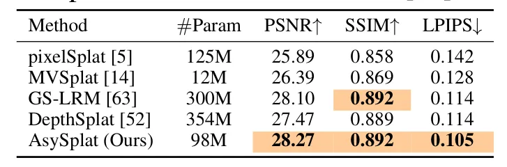

AsySplat：面向长序列场景建模的非对称 3D Gaussian SplattingAsySplat: Efficient Asymmetric 3D Gaussian Splatting for Long-Sequence Scene Modeling
长序列、高分辨率与计算效率高度相关于可扩展重建；但贡献主要面向 NVS，尚未展示在线定位、回环或 SLAM 几何指标。
一句话工作总结
以重几何粗 token、轻外观细 token 的非对称双分支减少长序列 3DGS 前馈重建冗余。
摘要
AsySplat 针对可泛化 3DGS 长序列建模中的冗余计算，将几何和外观解耦为非对称分支。几何分支使用粗粒度 token 和大部分参数完成多视图重建，外观分支则以少量参数处理细粒度 token 捕获细节，两者通过双向连接相互引导。作者认为高质量新视角合成并不总需要同等精细的几何，因此按任务难度分配计算。在 32 视图、960P 输入上，模型声称达到优化式方法质量并获得近 800 倍加速，同时以更少参数超过既有可泛化模型。
Recent generalizable 3D Gaussian Splatting models have advanced long-sequence novel view synthesis (NVS), but at the cost of substantial redundant computation. We identify that the redundancy can be mitigated based on two observations: (i) high-precision geometry is not strictly required for high-quality NVS; (ii) appearance learning is generally easier than geometry recovery. Motivated by these insights, we propose an asymmetric architecture that decouples geometry and appearance modeling. The geometry branch processes coarse-grained tokens with most of the parameters for multi-view reconstruction, while the appearance branch operates on fine-grained tokens to capture details using significantly fewer parameters. The two branches interact through bilateral connections, enabling mutual guidance for their respective tasks. This task-aware asymmetry reduces the computational redundancy and allocates the computation more judiciously, thereby increasing parameter efficiency and enabling smaller models to achieve strong performance. On 32-view 960P inputs, our model matches optimization-based methods while delivering nearly 800x speedup, and surpasses the zero-shot performance of state-of-the-art generalizable models with markedly fewer parameters and reduced training/inference overhead, achieving an overall efficiency improvement.
中文解读摘录
图表/页面预览
{kind=link}

{kind=link}

{kind=link}

{kind=link}

{kind=link}

{kind=link}

{kind=link}

{kind=link}

{kind=link}
